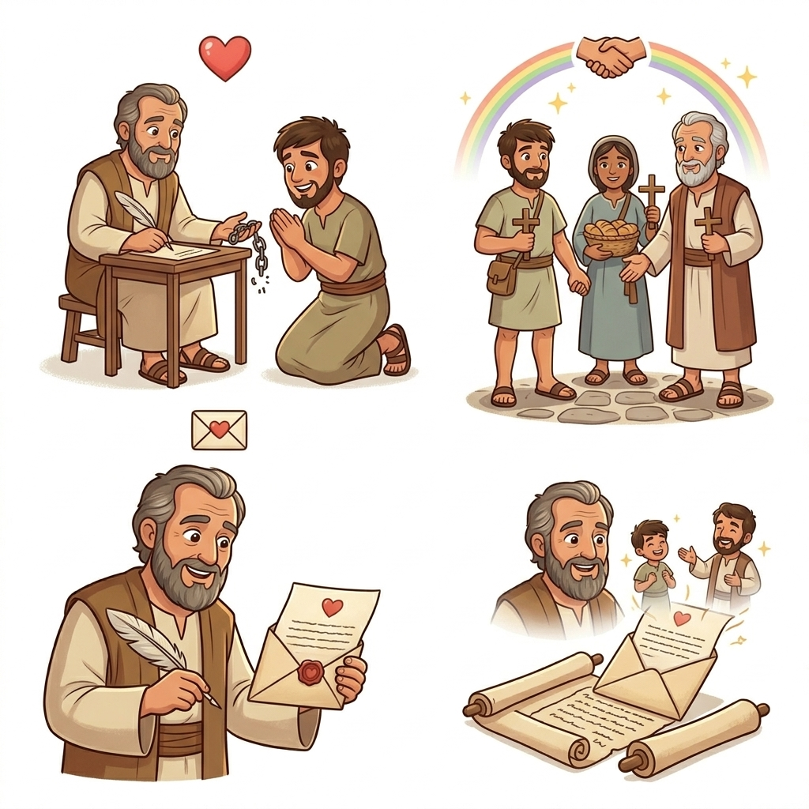
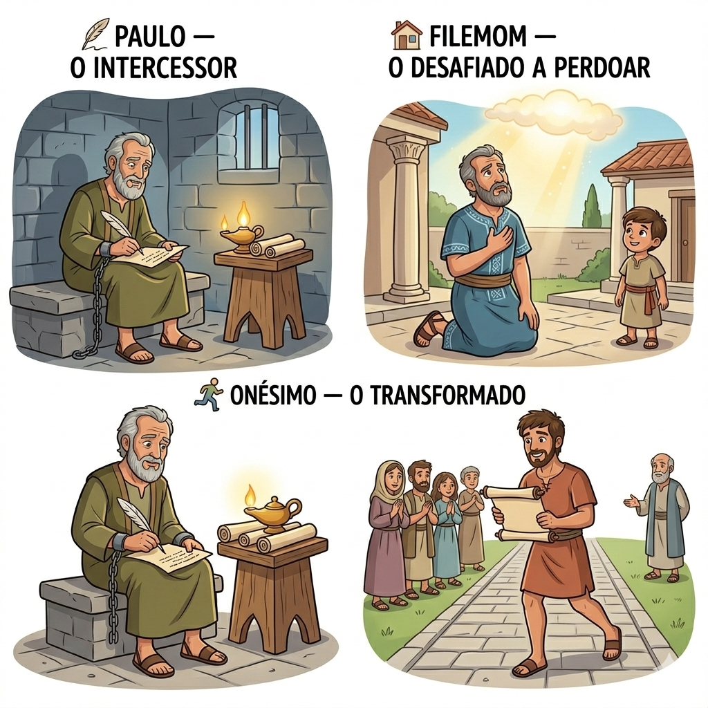
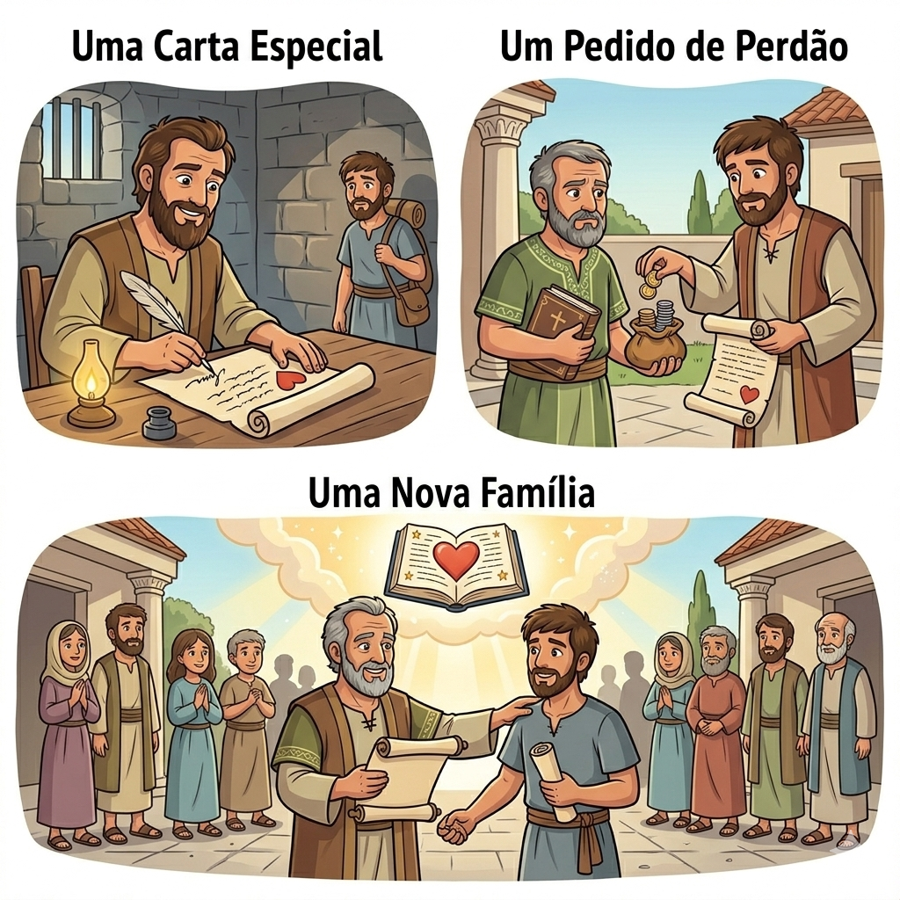
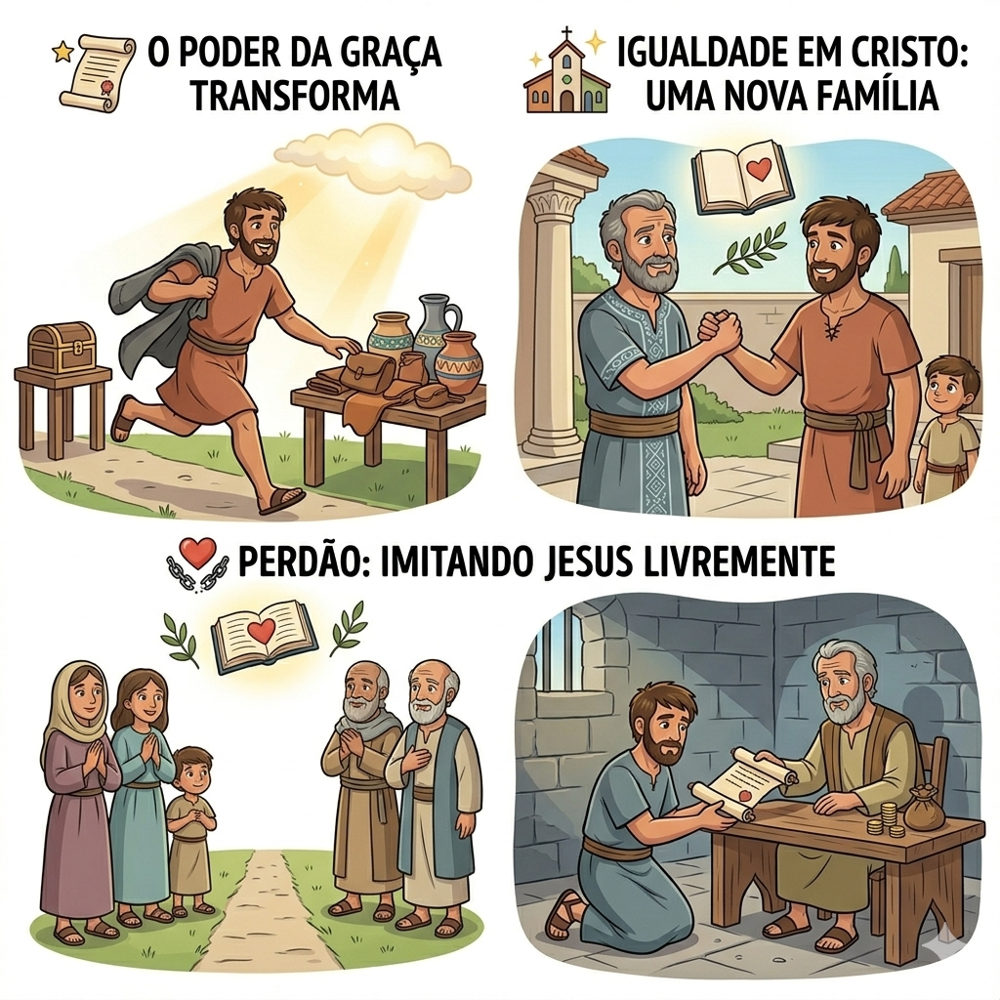
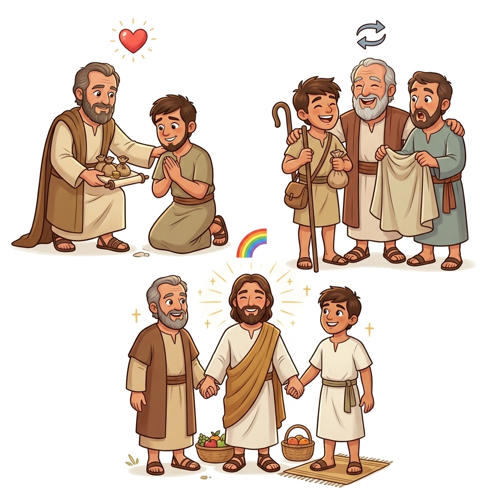
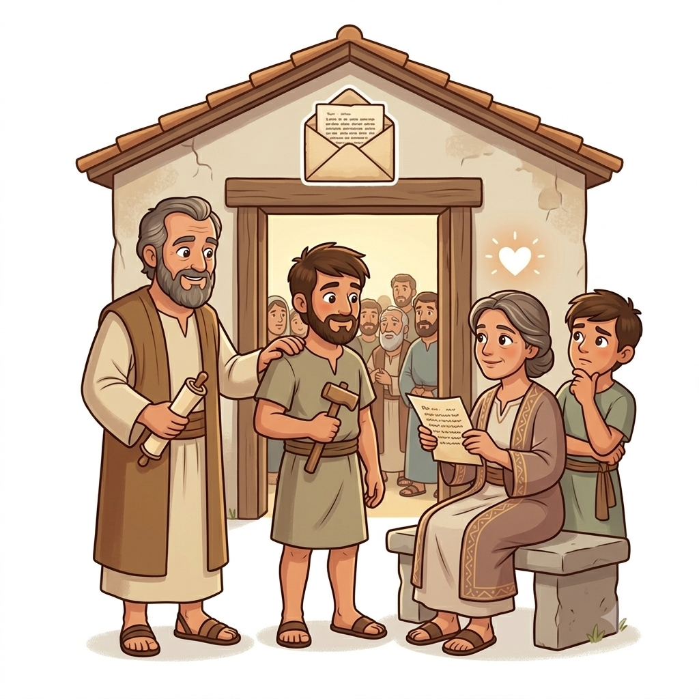

Uma Carta de Perdão e Amor — Um Resumo Visual para Crianças
Quando alguém erra e pede perdão,
Abra seu peito, estenda a mão!
Paulo ensinou com muito amor:
Perdoar é refletir o Salvador!
— Filemom 1:17-18
Não importa quem você era antes,
Em Cristo, somos todos semelhantes!
Escravo ou livre, rico ou pobre,
O amor de Deus a todos cobre!
— Filemom 1:16
Uma carta pequena, mas cheia de poder,
Mostra que o amor pode tudo vencer!
Paulo escreveu com compaixão,
Transformando vidas com sua oração!
— Filemom 1:4-7

O apóstolo que escreve esta carta cheia de amor! Ele está na prisão, mas seu coração está livre para amar e interceder pelos outros.
Um cristão rico que abria sua casa para a igreja se reunir. Ele tinha um coração generoso, mas agora precisa exercitar o perdão!
Um escravo que fugiu de Filemom, mas encontrou Paulo e se converteu a Cristo. Agora ele volta transformado, pedindo uma nova chance!
Paulo escreve a Filemom pedindo que ele receba Onésimo de volta — não como escravo, mas como irmão amado em Cristo!
Paulo até se oferece para pagar qualquer dívida que Onésimo tenha! Ele mostra que o amor cristão vai além das ofensas e busca a reconciliação.
O livro mostra que em Cristo não há diferenças: todos somos irmãos! Onésimo volta transformado, pronto para servir com amor.


Filemom nos mostra que perdoar é imitar Jesus! Quando alguém nos machuca, podemos escolher o amor e dar uma nova chance.
Não importa nossa posição social — todos somos iguais diante de Deus! Em Cristo, somos todos irmãos e parte da mesma família.
A graça de Deus transforma vidas! Onésimo era um fugitivo, mas se tornou um filho amado. Deus pode transformar qualquer história!
O amor cristão não é apenas palavras — é ação! Paulo mostra como colocar o amor em prática através do perdão e da reconciliação.
Deus não desiste de ninguém! Ele restaura relacionamentos quebrados e transforma erros do passado em oportunidades de crescimento.
Em Cristo, tudo é novo! Onésimo deixou de ser apenas um escravo e se tornou um irmão amado. Essa é a transformação que Jesus oferece!


Filemom é a carta mais curta de Paulo — tem apenas 25 versículos! Mas não se engane: ela está cheia de amor, compaixão e ensinamentos profundos sobre perdão e graça.
Diferente de outras cartas que Paulo escreveu para igrejas inteiras, esta foi escrita diretamente para Filemom. É como uma carta de um amigo para outro!
Paulo faz um jogo de palavras: Onésimo significa "útil" em grego. Ele diz que antes Onésimo foi "inútil", mas agora se tornou verdadeiramente útil!
© 2025 - Trilho Kids
Desenvolvido com ❤️ para crianças